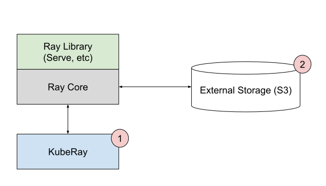
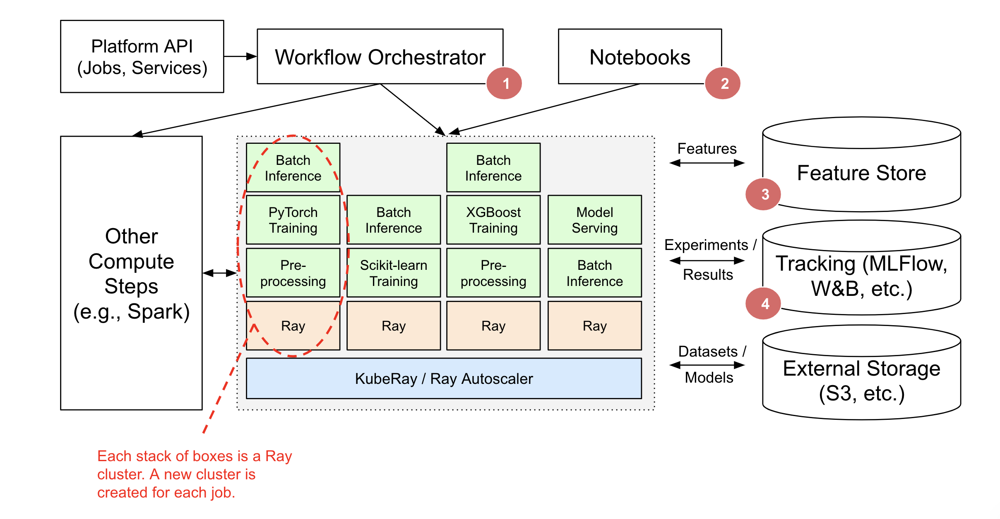

Ray 作为 ML 基础设施
Contents
Ray 作为 ML 基础设施#
Tip
如果您正在使用 Ray 构建 ML 平台，我们很乐意听取您的意见！填些 此简短表格 以参与其中。
Ray 及其人工智能库为希望简化 ML 平台的团队提供了统一的计算运行时。 Ray 的库（如Ray Train、Ray Data 和 Ray Serve）可用于组成端到端 ML 工作流，为数据预处理提供功能和API， 作为训练的一部分，并从训练过渡到服务。

为什么 Ray 可以作为 ML 基础设施？#
Ray 的人工智能库通过为可扩展 ML 提供无缝、统一和开放的体验，简化了机器学习框架、平台和工具的生态系统：

1. 无缝开发到生产: Ray 的人工智能库减少了从开发到生产的摩擦。使用 Ray 及其库，相同的 Python 代码可以从笔记本电脑无缝扩展到大型集群。
2. 统一的 ML API 和运行时: Ray 的 API 允许在 XGBoost、PyTorch 和 Hugging Face 等流行框架之间进行交换，只需最少的代码更改。从训练到服务的一切都在一个运行时（Ray+KubeRay）上运行。
3. 开放且可扩展: Ray 是完全开源的，可以在任何集群、云或 Kubernetes 上运行。在可扩展的开发人员 API 之上构建自定义组件和集成。
基于 Ray 的 ML 平台示例#
Merlin 是 Shopify 基于 Ray 的 ML 平台。它实现了 分布式应用程序 （如产品分类和推荐）的快速迭代和扩展。

Shopify 基于 Ray 的 Merlin 架构。#
Spotify 使用 Ray 进行高级应用 其中包括对家庭播客的内容推荐进行个性化设置，以及对 Spotify Radio 曲目排序进行个性化设置。
Ray 生态系统如何为 Spotify 的 ML 科学家和工程师赋能。。#
以下重点介绍了利用 Ray 的统一 API 构建更简单、更灵活的ML平台的功能公司。
机器学习平台部署 Ray#
在这里，我们将介绍如何在基础设施中使用或部署 Ray。有两种主要的部署模式 –pick 和在现有平台内部署。
核心思想是 Ray 可以 补充 您现有的基础设施和集成工具。
设计理念#
Ray 及其库处理了人工智能应用程序和服务的计算较重的方面。
Ray依靠外部集成（例如Tecton、MLFlow、W&B）进行存储和跟踪。
工作流编排器（例如，AirFlow）是一个可选组件，可用于调度重复作业、为作业启动新的 Ray 集群以及运行非 Ray 计算步骤。
可以使用 Ray 任务处理单个 Ray 应用程序中任务图的轻量级编排。
Ray 库可以在现有的 ML 平台中独立使用，也可以构建 Ray 原生 ML 平台。
选择你自己的类库#
您可以选择要使用的 Ray AI 库。
如果您是一名 ML 工程师，希望为特定的人工智能应用程序或服务用例独立使用 Ray 库，并且不需要与现有 ML 平台集成，则这一点适用。
例如，Alice 希望使用 RLli b为她的工作项目训练模型。Bob 希望使用 Ray Serve 来部署他的模型管道。在这两种情况下，Alice 和 Bob 都可以独立地利用这些库，而无需任何协调。
此场景描述了当今 Ray 库的大多数用法。
在上图中：
只使用了一个库 – 这表明您可以进行挑选，而不需要替换所有ML基础结构即可使用Ray。
你可以使用 Ray 的多种部署模式 的一种来启动和管理 Ray 集群和 Ray 应用程序。
Ray AI 库可以从外部存储系统（如 Amazon S3 /谷歌云存储）读取数据，并将结果存储在那里。
集成现有 ML 平台#
您可能已经有了一个现有的机器学习平台，但希望使用 Ray 的 ML 库的一些子集。例如，ML 工程师希望在其组织购买的ML平台（例如，SageMaker、Vertex）中使用 Ray。
Ray 可以通过与现有的管道 / 工作流协调器、存储和跟踪服务集成来补充现有的机器学习平台，而不需要更换整个 ML 平台。
在上图中：
工作流协调器，如 AirFlow、Oozie、SageMaker Pipelines 等，负责调度和创建 Ray 集群以及运行 Ray 应用程序和服务。Ray 应用程序可能是更大的编排工作流的一部分（例如，Spark ETL，然后是在 Ray 上训练）。
任务图的轻量级编排可以完全在 Ray 中处理。外部工作流协调器将很好地集成，但只有在运行非 Ray 步骤时才需要。
Ray 集群也可以创建用于交互使用（例如，Jupyter笔记本电脑、Google Colab、Databricks笔记本电脑等）。
Ray Train、Data 和 Serve 提供与特征存储（如 Feast for Training and Serving）的集成。
Ray Train 和 Tune 提供与 MLFlow 和 Weights&Biases 等跟踪服务的集成。